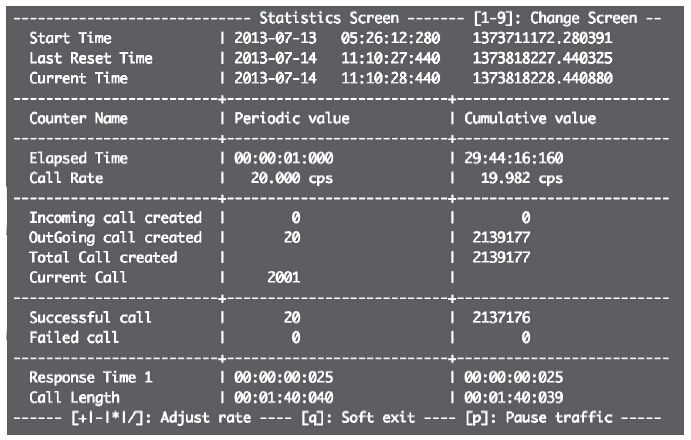

15.12 压力测试
如果将FreeSWITCH应用于生产系统，一般需要经过一定的压力测试。下面我们讨论几种针对FreeSWITCH进行压力测试的方法以及相关参数和性能指标。
15.12.1 参数和指标
我们先来讨论一下我们关心的指标。当我们拿到一台FreeSWITCH服务器时，一般只关心两个问题——它最大支持多少用户？最大支持多少用户同时通话？
与传统的TDM交换机相比，FreeSWITCH支持的最大用户数量几乎是无限的。因为，传统的TDM交换机中，每个用户（即每个电话）都会占用一个物理的硬件端口，这是一个绕不开的限制；而FreeSWITCH是IP的，所以基本上它仅受服务器内存及网络带宽的限制，可以很轻松地支持很大数量的用户。一般来说，FreeSWITCH的本地用户即使不打电话也会周期性地发送SIP注册（REGISTER）请求，因而支持的最大用户的数量就可以认为是跟FreeSWITCH所能处理的注册消息正相关的。一般来说，SIP客户端的注册失效（EXPIRE）时间是1小时，而根据SIP协议，客户端应该在半小时内重新发送注册消息，所以FreeSWITCH在1小时内仅需要处理一个用户的两次注册请求。假设FreeSWITCH在1秒内能处理100个注册请求的话，即它1秒就能服务50个用户，那么1小时就能服务3600×50=18000个用户。
当然，在NAT环境中，有的客户端为了保持NAT畅通，可能每十几秒就重发一次注册请求（实际上最好是重发OPTION）。同样，FreeSWITCH也可能1秒内能处理成千上万的用户注册。同时，具体的服务器以及网络环境也千差万别，因而，这些指标需要经过具体的测试才知道。
下一个指标就是最大并发数，也就是说一个系统最大可以支持多少人同时打电话。FreeSWITCH是一个典型的B2BUA，因而一般两个终端之间的通话就需要两个Channel，而像会议或IVR之类的应用就是每个终端一个Channel。简单起见，我们以系统并发的Channel的数量作为我们的并发指标。
与最大并发数相关的另一个指标是每秒能处理的呼叫数。一般来说，处理通话比较消耗资源的地方在于通话的建立和释放阶段——通话建立阶段需要处理Session的建立，媒体协商等；通话释放阶段需要处理Session的释放、写话单、清理现场等。而一旦通话建立后，双方互相收发媒体流，对系统资源的占用就可以认为是个常数了。
如果说系统每秒能处理30个呼叫（Channel）的建立与释放，每个呼叫持续30秒，那么系统的最大并发数就是30×30=900，而系统每小时能处理的呼叫数就是30×3600=108000。系统每小时所能处理的呼叫称为小时呼，又称BHCA（Busy Hour Call Attempt，即最大忙时试呼次数），每秒能处理的呼叫称为CPS（Call Per Second）。增加呼叫时长和增加每秒发起的呼叫数可以增加并发数。
在FreeSWITCH中，有两个参数可以限制系统能达到的最大呼叫量，以防止资源耗尽。其中，max_sessions控制最大并发数，它的默认值是1000；sps控制最大的每秒呼叫量，默认值是30。在系统中可以使用status命令查看这两个值（参见4.4节）。也可以使用如下命令修改这两个值：
freeswitch> fsctl max_sessions 5000
freeswitch> fsctl sps 100
上述命令仅在当前环境中生效，如果要使修改永远生效，则可以修改配置文件conf/autoload_configs/switch.conf.xml中如下的参数：
<param name="max-sessions" value="1000"/>
<param name="sessions-per-second" value="30"/>
15.12.2 呼叫测试
一般来说，大家比较关注呼叫测试。下面我们就来做两个实验。
1.FreeSWITCH对呼测试
首先，最简单的测试方法就是用两台FreeSWITCH对着呼。设置两台FreeSWITCH服务器，如A和B，它们的IP地址分别为192.168.1.A和192.168.1.B，则可以在B上使用如下命令呼叫A，并在本端执行echo App：
freeswitch> originate sofia/external/service@192.168.1.A:5080 &echo
注意，我们这里直接呼叫A的5080端口，以避免认证。当然，在A上的Public Dialplan中我们需要设置一个路由播放音乐：
<extension name="Load Test">
<condition field="destination_number" expression="^service$">
<action application="answer"/>
<action application="playback" data="local_stream://moh"/>
</condition>
</extension>
如果对于两台FreeSWITCH对呼的部署方式不熟悉的读者可以回过头去再看一下第13章的内容。
为了能方便的发起大量呼叫，我们在B上简单地写一个Shell脚本，具体如下：
#!/bin/bash
IP=192.168.1.A
CMD="bgapi originate sofia/external/service@$IP:5080 &eccho"
for f in `seq 1 10`; do
for f in `seq 1 30`; do
fs_cli -x $CMD
done
sleep 1
done
上述脚本使用两个for循环，内循环执行30次发起30个呼叫，然后停顿1秒，再次发起30个呼叫；外循环则控制总的循环次数。
这仅仅是一个简单的脚本，通话一旦建立便会一直处理通话状态，如果要控制通话的时长，可以在A的Dialplan中播放一个特定长度的文件，也可以在playback之前使用sched_hangup App设置多长时间后挂机，如：
<action application="sched_hangup" data="+60"/>
上述配置表示从现在开始，60秒后挂断通话。当然，如果仅仅测最大呼叫量的话，也可以不要让它自动挂机，而是在测试完成后手工使用hupall命令挂机。
2.使用SIPP进行测试
SIPP [1] 是一个很好的SIP测试工具，它可以对SIP协议及服务器性能进行比较全面测试。这里我们仅讨论最简单的情况。
首先，我们还是对上一节的FreeSWITCH服务器A进行测试，SIPP可以运行在A上，也可以运行在B上。它的使用方法很简单，只需要运行以下命令就可以了：
$ sipp -sn uac -r 1 -d 10000 -rtp_echo 192.168.1.A:5080
上述命令中，“-sn uac”表示使用SIPP默认的场景文件（它将作为一个UAC，即SIP客户端）；“-r 1”表示每秒发一个呼叫请求；“-d 10000”表示每个请求持续10000毫秒（即10秒）；“-rtp_echo”表示将收到的RTP流原样发回去（相当于FreeSWITCH中的echo App）；最后的参数表示发到FreeSWITCH服务器A的5080端口 [2] 。
上述命令运行后，可以通过键盘上的1、2、3、4等按键控制界面上显示的统计信息，包含呼叫次数，成功、失败次数及各种时长信息等。图15-16是笔者在一次测试过程中的截图，图中显示了在20cps的情况下，当前有2001个并发呼叫，目前已成功进行了2137176次呼叫。

图15-16 SIPP测试截图
SIPP使用XML描述的场景文件来描述何时该收、发什么样的SIP消息。不过其默认的配置文件少了点配置，因此FreeSWITCH社区推荐使用以下配置文件进行测试：http://www.freeswitch.org/eg/load_test/dft_cap.xml。下载完上述文件后，可以通过-sf参数指定使用该场景文件，如：
sipp -sf dft_cap.xml -r 1 -d 10000 -rtp_echo 192.168.1.A:5080
其中，“-r”表示每秒发一个请求，“-d 10000”表示每个呼叫持续10000毫秒（即10秒）；“192.168.1.21:5080”即FreeSWITCH的IP和端口；“-rtp_echo”表示我们把收到的RTP信息原样送回去，跟FreeSWITCH中的echo App类似。
SIPP默认使用的被叫号码为service，因此我们在上一节的Dialplan中就使用了service，当然，也可以使用-s参数指定一个其他的被叫号码，如下列代码指定被叫号码为load_test：
sipp -sf dft_cap.xml -s load_test -r 1 -d 10000 -rtp_echo 192.168.1.A:5080
当然，SIPP还有好多选项，读者也可以研究一下，自己来写场景文件。更多的测试方法请参阅SIPP的有关资料，在此我们就不多讲了。
15.12.3 注册测试
SIPP有一个场景文件可以支持注册测试，该文件可以在http://sipp.sourceforge.net/doc/branchc.xml处下载。有了该场景文件后，还需要配置一个数据文件，该文件提供注册用户的用户名密码等。如笔者使用的数据配置文件内容如下：
SEQUENTIAL
1001;[authentication username=1001 password=1234]
1002;[authentication username=1002 password=1234]
1003;[authentication username=1003 password=1234]
其中，“SEQUENTIAL”表示顺序执行。将上述文件存为users.csv，然后就可以使用如下的SIPP进行测试了：
sipp -aa -sf branchc.xml -inf users.csv -r 10 -p 6060 192.168.7.102
其中，我们使用了“-inf users.csv”指定我们使用的数据文件；“-r 10”表示每秒注册10个；“-p 6060”指定SIPP监听的本地的端口号，它的默认值是5060，明确指定端口号是为了防止当SIPP与FreeSWITCH在同一台主机上运行时产生冲突；最后的IP地址为FreeSWITCH的地址。
运行上述命令后，可以在SIPP中看到相关的统计信息，在FreeSWITCH中也可以使用“sofia status profile internal reg”命令查看客户端是否已正确注册。
15.12.4 编解码测试
FreeSWITCH支持很多语音编码，不同编码的性能也不同。比如G711（PCMU/PCMA）编解码基本上只要靠查表就行，所以是最高效的，而G729或iLBC之类的编码就需要比较高的CPU。测试编解码的性能也很简单，如笔者在测试时在FreeSWITCH的external Profile中使用如下参数设置语音编码为G729：
<param name="inbound-codec-prefs" value="G729"/>
然后在另一个（或几个）FreeSWITCH服务器上向该被测试的FreeSWITCH上发起呼叫，或者使用SIPP对它进行呼叫。当有测试到来时，进入相关的Dialplan播放一个声音文件即可。
笔者曾在一台虚拟机上简单进行过测试，编解码的性能从高到低依次是：PCMU/A、G729（FreeSWITCH官方商业版）、SILK、iLBC、iSAK，后面的几种编码需要比PCMU多使用几倍的CPU。限于当时的环境没有测试其他编解码。当然，笔者的测试结果仅供参考，读者如果感兴趣可以使用这里的方法自己测试一下。
15.12.5 测试结果
在本例中，我们讨论了压力测试的一些相关指标并实验了几种测试方法。大多数的测试都没有标准答案，FreeSWITCH官方也一直不正面回应压力测试的问题，理由是每个人的系统都是不一样的，业务场景也不同，操作系统以及软硬件环境也不一样，因此，测试的最终结果可能会差异很大。而且，压力测试能测试的呼叫流程和各种应用场景毕竟有限，所以最好也最准确的测试就是将FreeSWITCH应用到生产中去用实际的场景进行实地测试。
[1] 参见http://sipp.sourceforge.net/。
[2] 因为5080端口无需认证，所以测试起来比较方便。对5060端口进行测试需要配置认证支持，这比较复杂，在此我们就不多介绍了。